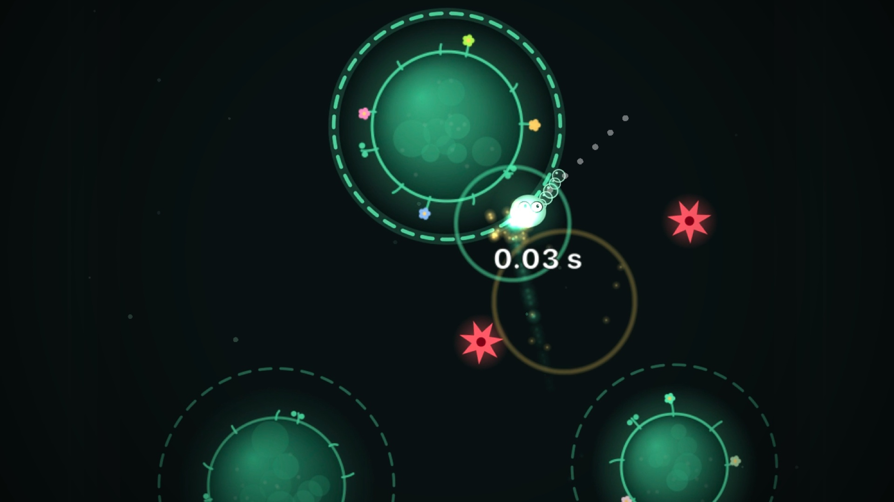

Close-Call Weeks
Slip past thorns by a hair. Every close call you bank counts on this week’s Game Center board, and a fresh board starts every Monday.
7 December 2026 – 4 January 2027 · four weekly boards · free, nothing to buy

Open Naila’s Orbit on the App StoreHow it works
- Play any level. When the light escapes danger by a hair, the margin floats up, to the hundredth of a second.
- Bloom the level and its close calls are banked on the Close Calls This Week leaderboard in Game Center.
- The board starts again every Monday at 00:00 UTC (04:00 in Baku), so every week is a new race.
- Sign in to Game Center on your iPhone to appear on the board. The game itself needs no account.
Support and help · Contact: nailasorbit.help@gmail.com